Übung 4.1 - Shading und Rendering
In der folgenden Übung werden wir eine Unterwasserszene rendern, um in den nachfolgenden Übungen unsere bisherig erstellten Objekte hineinzusetzen.
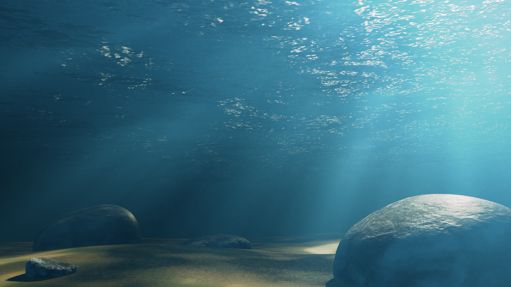
1. Wasseroberfläche
1.1 Setup
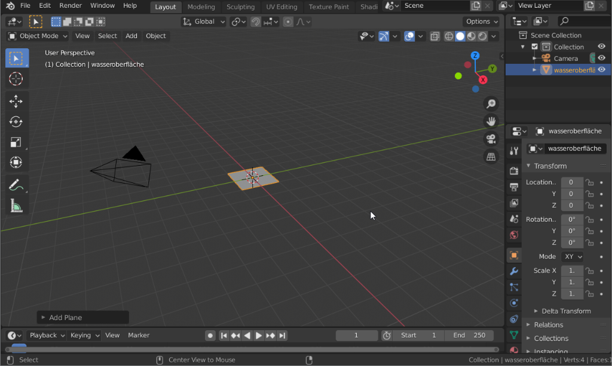
- Startet eine neue Blender Szene
- Löscht den Würfel und das Punktlicht aus der Szene heraus
- Fügt der Szene eine neue Plane hinzu (
Shift + A→ Mesh → Plane). Diese Plane soll unsere Wasseroberfläche werden. Benennt sie entsprechend. - Skaliert die Plane ca. um das 50 fache (
S + 5 + 0) - Verschiebt und dreht die Kamera so, dass sie die Wasseroberfläche von leicht schräg unten betrachtet.
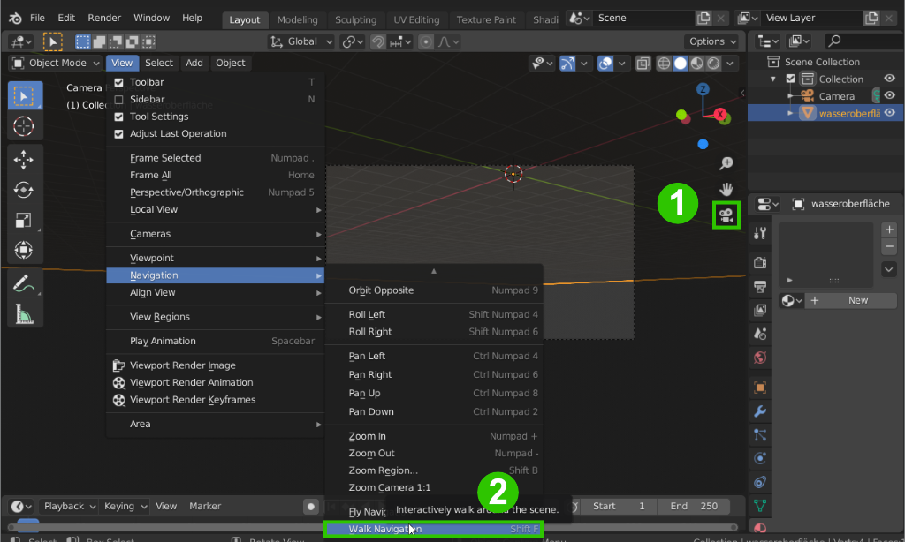 Hilfreich zum Platzieren der Kamera kann der Walk Navigation Modus sein. Wechselt dazu in die Kameraansicht 1 und wählt *View → Navigation → Walk Navigation 2. In diesem Modus könnt ihr euch nun wie in einem First Person Spiel mit der Maus umsehen und mit
WASDbewegen.
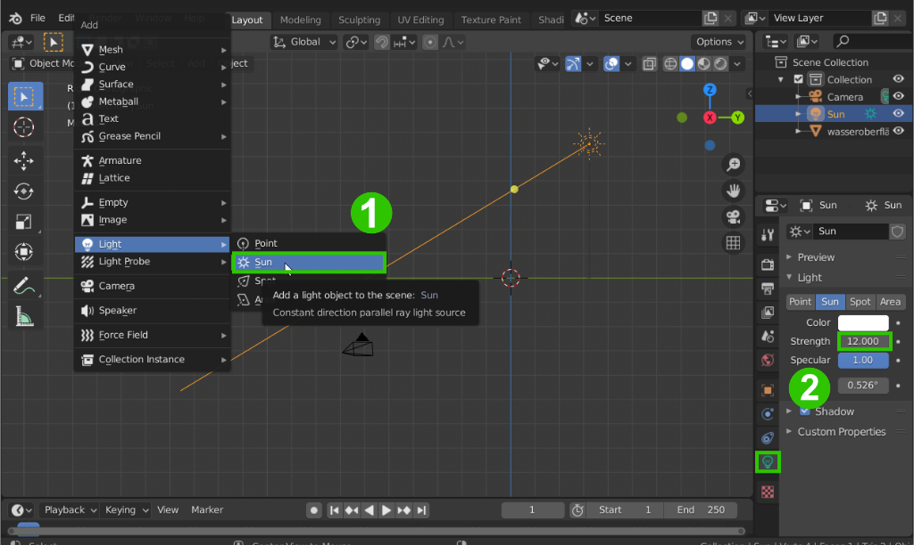
-
Fügt der Szene ein Sun Licht hinzu (
Shift + A→ Light → Sun) 1 -
Rotiert das Licht so, dass es (aus Sicht der Kamera) von schräg rechts oben auf die Szene leuchtet. Kann später nach Bedarf noch angepasst werden.
-
Stellt die Stärke des Sonnenlichts ca. auf 12 2
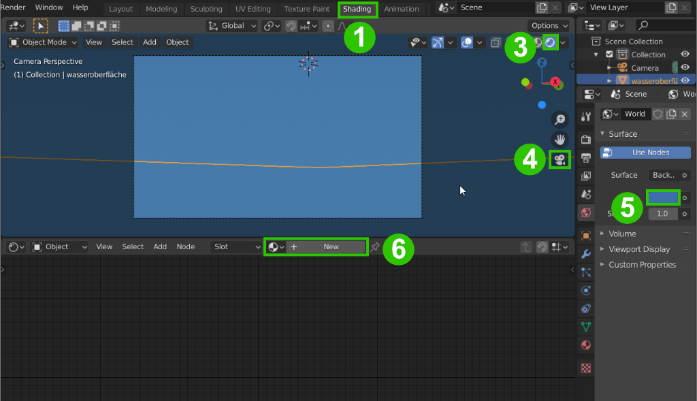
- wechselt nun in den Shading Workspace 1
- Wechselt Viewport Shading zu Rendered 2
- Geht in die Kamera Ansicht 3
- Stellt den Hintergrund auf ein mattes dunkelblau 4
- Selektiert die Wasseroberfläche und fügt ihr im Shader Editor ein neues Material hinzu 5
Nun haben sich einige neue Bereiche geöffnet:
- unten seht ihr nun den Shader Editor. Hier wird immer das Material des markierten Objekts angezeigt.
- links daneben der bereits bekannte Image Editor hier können Texturen angesehen und bearbeitet werden.
- oben links ist der Dateiexplorer zu finden. Per Drag & Drop können z.b. Bilddateien in den Image Editor oder als Textur in den Shader Editor gesetzt werden.
- Rechts hat sich im bereits bekannten Properties Editor der World-Tab geöffnet. Hier kann der Hintergrund der Szene eingefärbt werden.
- Der 3D Viewport ist nun in der Lookdev Ansicht [1]. Diese Ansicht erlaubt es, Objekte in einigen Voreingestellten Lichtsituationen darzustellen und die Materialien richtig anzuzeigen. Im Shading Menü oben rechts finden sich die Optionen dazu.
1.2 Material
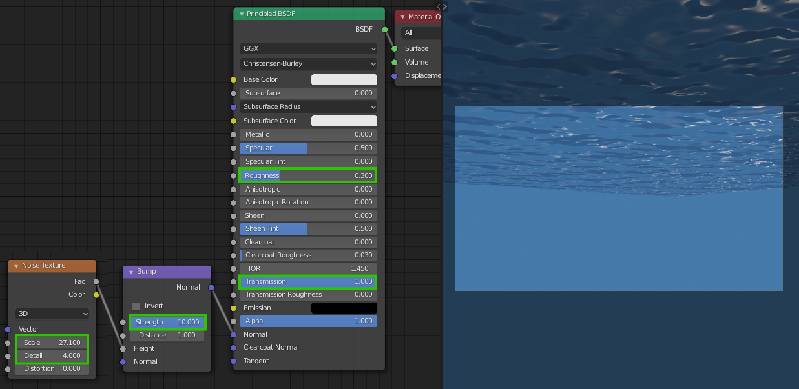
- Fügt im Shader Editor einen Bump und einen Noise Texture Node hinzu
Für die Textur verwenden wir hier prozedurale Texturen. So werden Texturen genannt, die nicht in einer Bilddatei gespeichert sind, sondern beim Rendern generiert werden. Die wohl bekannteste prozedurale Textur ist das sogen. Perlin Noise, das von Ken Perlin für den Film Tron entwickelt wurde. Ähnlich funktioniert auch Blenders Noise Texture Node.
- Verbindet die Nodes wie im Screenshot gezeigt und passt die eingerahmten Werte entsprechen an (Werte müssen nicht genau so übernommen werden - so dass es gut aussieht.)
- Rotiert eventuell das Sonnenlicht nocheinmal, so dass die Struktur des Wassers aus Kamerasicht gut hervorgehoben wird.
2. Wasservolumen
2.1 Material
Nun wollen wir ein Volumen hinzufügen um die Färbung des Wassers zu simulieren, sowie Lichtstrahlen darin darzustellen.
- Fügt im Laylout Tab einen Cube hinzu und skaliert und verschiebt ih so, dass er direkt unter der Wasseroberfläche sitzt und die ganze Szene umschließt.
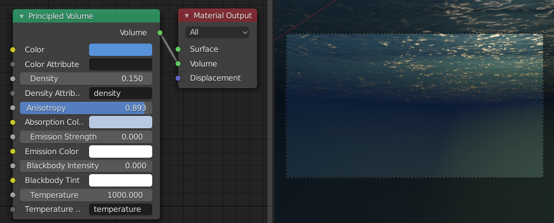
- Gebt dem Objekt (im Shading Tab) ein neues Material und löscht den Principled BSDF Shader.
- Fügt stattdessen ein Shader → Principled Volume Node hinzu und verbindet ihn mit dem Volume Slot des Material Output Nodes.
- Stellt die Color, Density, Anisotropy und Absorption Color Werte ähnlich wie im Screenshot ein.
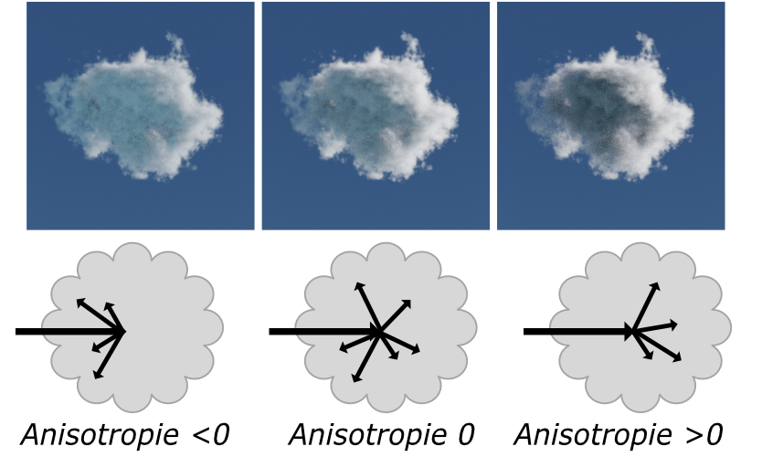 Anisotropie kontrolliert die Richtung, in welche Lichtstrahlen in Volumetrischen Materialien gestreut werden.
2.2 Lichtstrahlen
Da Blenders Echtzeitrenderengine Eevee nicht live die Streuung von Licht unter der Wasseroberfläche berechnen kann, müssen wir hier ein wenig trixen um überzeugend refraktierte Sollenstrahlen unter der Wasseroberfläche zu bekommen.
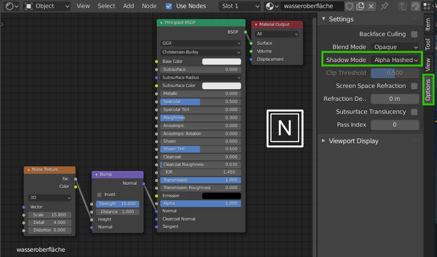
- Selektiert nun wieder die Wasseroberfläche.
- Öffnet im Shader Editor die Sidebar mit
N - Stellt im Options Tab → Shadow Mode auf Alpha Hashed
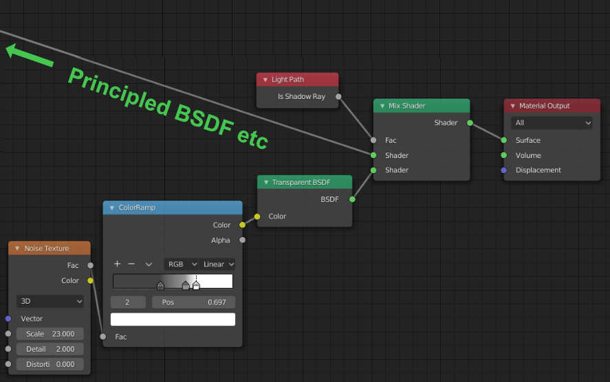
- Fügt einen Shader → Transparent BSDF Node hinzu und verbindet ihn wie im Screenshot mit einem Converter → Color Ramp neuen Noise Texture
- Fügt einen Shader → Mix Shader Node hinzu, um das Hauptmaterial (Principled BSDF) mit dem Transparent Node zu mixen.
- In den Factor Input des Mix Nodes leiten wir nun den Shadow Ray Output eines Light Path Nodes
- Stellt deren Werte ca. entsprechend dem Screenshot ein. Hier gibt es kein richtig oder Falsch, testet aus was gut aussieht.
Damit sagen wir der Renderengine, dass immer wenn es darum geht einen Schatten zu werfen der untere Input des Mix Nodes verwendet werden soll, in jedem anderen Fall jedoch trotzdem der obere. Die “Maske” für den Schatten erzeugen wir hier mit der Noise Textur, deren Kontrast wir mit dem Color Ramp erhöhen.
Der ColorRamp Node nimmt als Input Graustufen und gibt dann abhängig von der Helligkeit des Inputs die im Verlauf angegebenen Farben aus. Schwarz (links) nach Weiß (rechts).
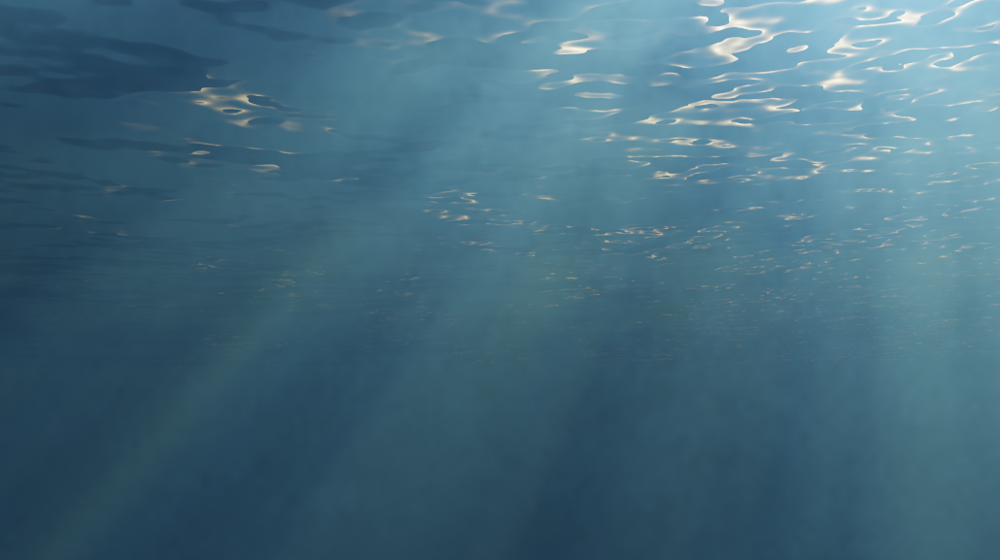
Nun sollte euere Szene etwa so aussehen.
3. Sandboden
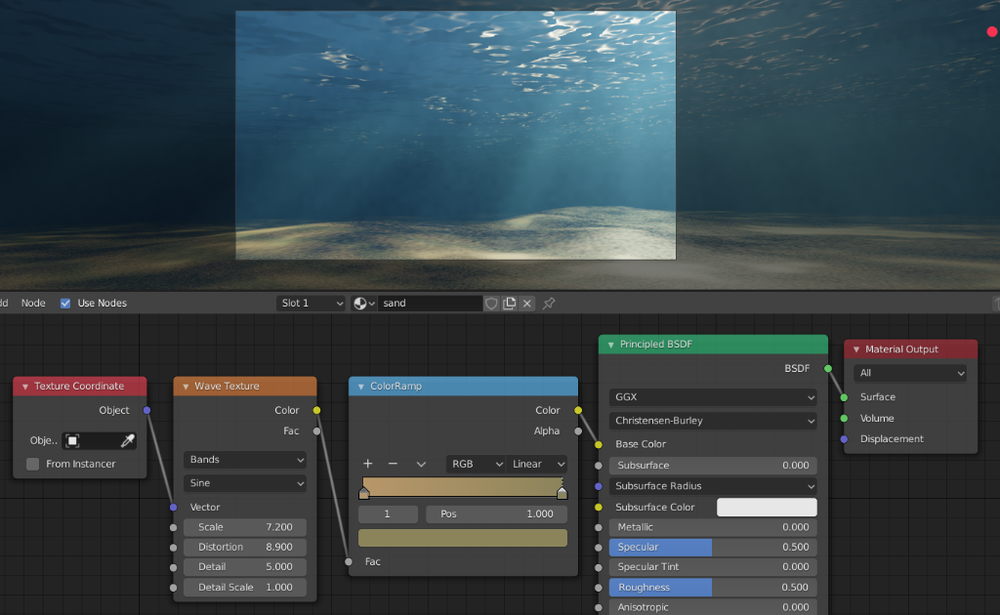
- Verwendet ein hochskaliertes Add → Mesh → Plane mit einem Material ähnlich dem im Screenshot, um einen Sandboden zu erstellen.
- Fügt einige Hügel und Unebenheiten hinzu. Unterteilt dazu das Mesh im Editmode mit Rechtsklick → Subdivide mehrmals und nutzt Proportional Editing, um das Mesh organisch zu formen. Beim Verformen des Meshes mit Proportional Editing kann das Mausrad benutzt werden, um dessen Radius zu erhöhen.
Beim Proportional Editing werden Verticies in der Nähe der selektierten Geomtrie abfallend zur Distanz mitbewegt.
4. Ein Stein
- Nutzt die Techniken aus Übung 3, um um mit Subdivision Surface Modeling schnell einen einfachen Stein zu modellieren.

-
Gebt dem Stein ein neues Material.
-
Da Stein unpoliert recht rau ist, stellt Roughness auf einen recht hohen Wert, z.b. 0.8
-
Fügt im Node-Editor Texture → Noise Texture hinzu und verbindet den Fac Output der Textur mit dem Base Color Input des Principled BSDF Shaders.
-
Da die Farben noch recht blass sind, nutzen wir einen Conveerter → ColorRamp Node, um die Textur einzufärben. Zieht diesen Node zwischen die Textur und den Principled Shader.
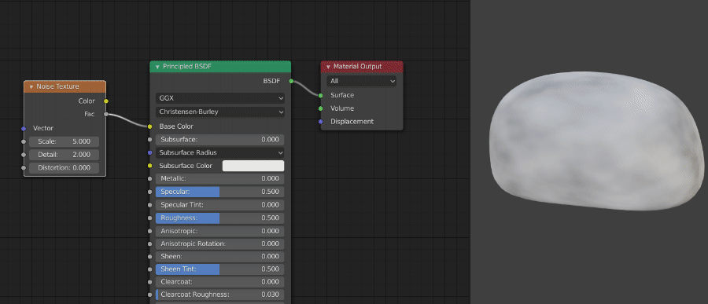
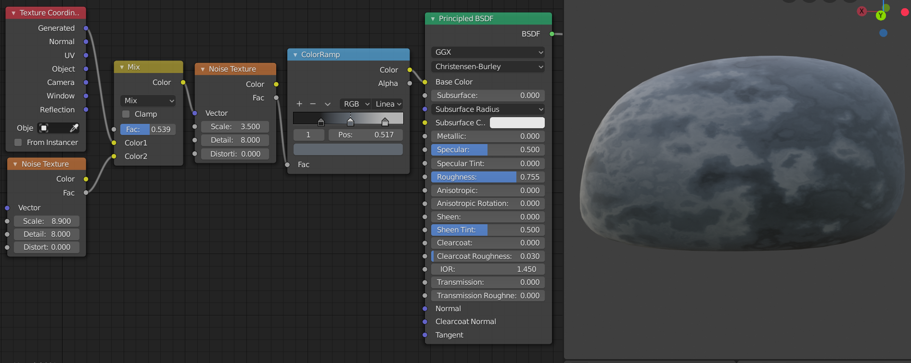
- Fügt nun eine zweite Noise Texture hinzu und vermischt diese mit einem MixRGB Node mit den Texturkoordinaten.
Die Texturkoordinaten werden in Blender auf die gleicheWeise behandelt wie Farben (X = Rot, Y = Grün, Z = Blau) und können dementsprechend auch mit Texturen vermischt werden. In diesem Beispiel ist das Ergebnis davon die Verzerrung der ersten Noise-Textur mithilfe der Zweiten. Damit lässt sich eine natürlicher wirkende Textur erzugen.
- Die Verzerrung kann nun mit dem Fac des Mix Nodes kontrolliert werden.
- Experimentiert solange mit den Scale Werten der beiden Texturen, bis ihr zufrieden mit dem Ergebnis seid. Stellt Detail beider Texturen vorerst ca. auf 8 (mehr Detail, detailliertes Ergebnis aber längere Renderzeit)
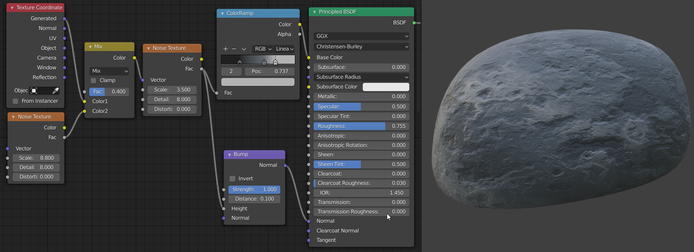
- Fügt einen Bump Node hinzu und verbindet dessen Height Wert mit dem Fac Output der Noise Textur und den Output mit dem Normal Input des Principled BSDF Nodes.
- Stellt den Distance Wert im Bump Node auf einen realistischeren Wert, z.b. 0.1
Bumpmapping manipuliert die Normalen des Materials abhängig der verwendeten Graustufentextur. Somit entsteht die Illusion einer Struktur auf der Oberfläche. Dabei werden mit dunklen Farben auf der Textur Rillen erzeugt und mit hellen Farben Erhebungen.
- setzt den Stein entsprechend in Szene und dupliziert ihn nach Bedarf.
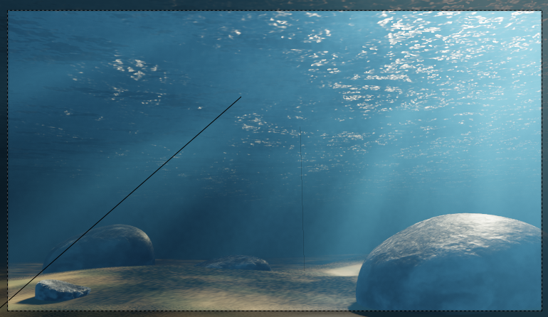
4. Rendern

- Damit das Bild nicht so verrauscht erscheint, erhöht die Samples im Render Tab des Properties Editors z.b. auf 128 (Das Ergebnis wird erst beim Rendern sichtbar.)
- Erhöht auch die Einstellungen für Volumetrische Materialien. Stellt die Tile Size auf 4px und erhöht auch hier die Samples auf 128.
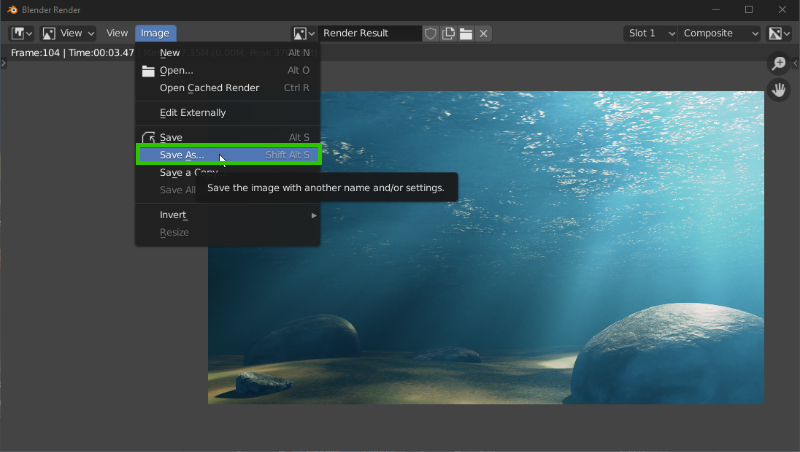
- Rendert nun die Szene mit F12 oder über
Render → Render Image - Speichert die gerenderte Szene als Bilddatei ab
Aufgabe
- Erstellt mit der gezeigten Technik eine Unterwasserszene und rendert das Ergebnis
- Die Abgabe besteht aus der .blend Datei und dem gerenderten Bild.
Ressourcen & Tutorials zum Thema
Einige Informationen zu Materialnodes finden sich in Lektion 4
Visuelle Repräsentation der Parameter der Principled BSDF Shadernodes:

| Art/Länge | Titel | Thema | Quelle |
|---|---|---|---|
| 7:14 | Shading Editor - Blender 2.80 Fundamentals | Materialien | YouTube - Blender (offizieller Kanal) |
| 9:00 | Blender 2.8 - The Node Editor | Materialien | YouTube - Rory Allen |
| 2:59 | Procedural Textures - Blender 2.80 Fundamentals | Materialien | YouTube - Blender (offizieller Kanal) |
| 15:04 | Blender 2.8 Beginner Tutorial - Part 9: Procedural Materials | Prozedurale Texturen | YouTube - CG Boost |
| Blender Reference Manual - Shader Nodes | Dokumentation zu jedem verfügbaren Shadernode | Blender Dokumentation |